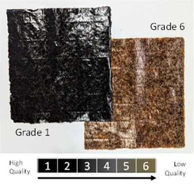

銅（Cu）の価数を調べる
Cu、Cu₂O、CuOのXANESスペクトルを比較した測定事例。
測定事例の詳細を見る ›九州シンクロトロン光研究センター
SAGA-LS XAFS Portal試作サイト（正式公開前）｜ Ver. 0.2.2
SAGA-LSで実施したXAFS測定の事例を紹介します。
Cu、Cu₂O、CuOのXANESスペクトルを比較した測定事例。
測定事例の詳細を見る ›
加熱・還元に伴うNiの化学状態と局所構造の変化を追跡した事例。
測定事例の詳細を見る ›
有明海産海苔に含まれる鉄や亜鉛のXANES測定事例。
測定事例の詳細を見る ›